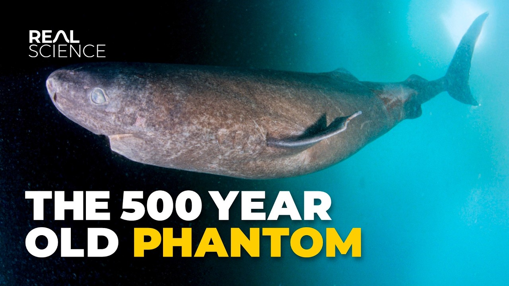

【格陵兰鲨：500岁的幽灵】
Summary: Danish scientists found a way to determine a deceased person's date of birth, and in 2016, they applied this method to Greenland sharks, revealing their astonishing longevity.
摘要： 丹麦科学家发现了一种确定逝者出生日期的方法，并在2016年将其应用于格陵兰鲨鱼，揭示了它们惊人的寿命。

⏱️ Estimated Reading Time: 39 min
📚 六级生词 📚 雅思生词 📚 托福生词 📚 GRE生词 📚 视频里的生词
In the frigid depths beneath the Arctic ice, an unsettling and ancient creature drifts through the dark waters.
在北极冰层下的寒冷深处，一种古老而令人不安的生物在黑暗的水域中游荡。
The Greenland shark is the largest fish in the Arctic Ocean and one of the largest and most mysterious sharks on earth.
格陵兰鲨是北冰洋最大的鱼类，也是地球上最大、最神秘的鲨鱼之一。
Fishermen who've encountered them describe them as ghosts due to their sluggish demeanor and pale, almost lifeless eyes.
遇到它们的渔民将它们描述为幽灵，因为它们行动迟缓，眼睛苍白，几乎毫无生气。
Eyes often parasitized by a repulsive worm-like copepod that conspicuously and upsettingly dangles there.
它们的眼睛常被一种恶心的蠕虫状桡足类寄生虫寄生，这些寄生虫明显而令人不适地悬挂在那里。
Fishermen often recoil if they accidentally catch one, overwhelmed by their smell—a smell of urine.
渔民如果意外捕获一条，常常会退缩，因为它们散发出的尿液般的气味令人难以忍受。
Catching one is indeed often an accident because their flesh is toxic.
捕获它们通常是意外，因为它们的肉有毒。
Sled dogs that have eaten large quantities of it become "shark drunk," and this is not as fun as it sounds.
雪橇犬如果大量食用它们的肉会变得“鲨鱼醉”，这并不像听起来那么有趣。
They suffer symptoms like hypersalivation, vomiting, explosive diarrhea, convulsions, followed by death.
它们会出现症状，如过度流涎、呕吐、剧烈腹泻、抽搐，随后死亡。
But these sharks are more than just gross and unsettling—they seem to defy the rules of nature.
但这些鲨鱼不仅仅是恶心和令人不安——它们似乎违背了自然法则。
They only swim at about 2 km/h, and yet they are considered a top predator in their environment.
它们的游泳速度仅为每小时2公里，却被认为是其环境中的顶级捕食者。
They're the only shark that can withstand the cold waters of the Arctic year-round and can live at depths over 2,000 m.
它们是唯一能全年忍受北极寒冷水域的鲨鱼，并且能在超过2000米的深度生存。
The water temperature can fall as low as -2°C.
水温可低至零下2摄氏度。
On top of this, these sharks can be ancient in the truest, most literal sense of that word.
最重要的是，这些鲨鱼可能是真正意义上的古老生物。
They can be so old that there are likely individuals swimming in the sea that were alive before Christopher Columbus voyaged to the Americas.
它们可能非常古老，以至于现在海洋中游弋的个体中，有些可能在哥伦布航行到美洲之前就已经存在。
Before Michelangelo painted the Sistine Chapel, while the Aztec and Incan Empires were still thriving.
在米开朗基罗绘制西斯廷教堂壁画之前，在阿兹特克和印加帝国仍然繁荣的时候。
Scientists estimate their average lifespan to be 272 years, but some individuals could be well over 500 years.
科学家估计它们的平均寿命为272年，但有些个体可能超过500岁。
This makes the Greenland shark the longest-living vertebrate on Earth.
这使格陵兰鲨成为地球上寿命最长的脊椎动物。
For centuries, the secrets of the Greenland shark have been locked beneath the ice and in the shadows.
几个世纪以来，格陵兰鲨的秘密一直被锁在冰层和阴影之下。
But now the black box is beginning to open, and its mysteries are starting to be revealed.
但现在，这个黑匣子正在被打开，它的奥秘开始被揭示。
Why is the Greenland shark so toxic, and how is it possible that it's a top predator?
为什么格陵兰鲨如此有毒？它如何成为顶级捕食者？
How can it survive in both extremely deep and extremely cold waters?
它如何在极深和极冷的水域中生存？
And how does it live so unbelievably long?
它如何活得如此难以置信的长寿？
Greenland sharks are among the largest shark species, typically growing to 6 to 7 m (20 to 24 ft) in length.
格陵兰鲨是最大的鲨鱼物种之一，通常长到6至7米（20至24英尺）。
They live in the North Atlantic and Arctic oceans but can occasionally be found further south.
它们生活在北大西洋和北冰洋，但偶尔也会出现在更南的地方。
Recently, one was found in the Caribbean, but that one seemed to be extremely lost.
最近，一条格陵兰鲨在加勒比海被发现，但那条似乎迷路了。
Their cylindrical bodies can weigh up to 1,000 kg (2,200 lb), comparable to a great white shark.
它们圆柱形的身体可重达1000公斤（2200磅），与大白鲨相当。
But despite size similarities, these two sharks could not be more different.
但尽管体型相似，这两种鲨鱼却截然不同。
Whereas great whites are known for their incredible bursts of power and speed, Greenland shark top speed is only around 3 km/h at best.
大白鲨以其惊人的爆发力和速度闻名，而格陵兰鲨的最高速度仅为每小时3公里左右。
But despite this, Greenland sharks are surprisingly a top predator in their ecosystem.
但尽管如此，格陵兰鲨在其生态系统中出人意料地是顶级捕食者。
They eat fish like cod and occasionally even seals.
它们以鳕鱼等鱼类为食，偶尔甚至捕食海豹。
This at first glance seems like it should be impossible.
乍一看，这似乎是不可能的。
How can this sluggish shark ever dream of catching a flitting, agile marine mammal?
这种行动迟缓的鲨鱼怎么可能抓住敏捷的海洋哺乳动物？
To find out more about this, I talked to Eric St. Marie, PhD candidate at the University of Windsor in the Hussey Lab.
为了了解更多，我采访了温莎大学Hussey实验室的博士生Eric St. Marie。
We know they'll eat all sorts of different things—everything from fish to squid to even seals and whales.
我们知道它们会吃各种各样的东西——从鱼类到鱿鱼，甚至海豹和鲸鱼。
But are they eating those things always when they're already dead—so scavenging—or are they hunting live prey?
但它们是在这些动物已经死亡时进食（即食腐），还是在捕猎活体猎物？
Knowing those differences really helps us understand what their actual role is in the ecosystem.
了解这些差异有助于我们理解它们在生态系统中的实际作用。
But because we don't really know how they're finding their food, we know that they do scavenge, but we also have evidence from hunters that they might actually be also actively hunting live prey.
但由于我们并不清楚它们如何寻找食物，我们知道它们会食腐，但也有来自猎人的证据表明它们可能也在主动捕猎活体猎物。
But how would that even be possible?
但这怎么可能呢？
One of the theories people put out is that they might be getting seals when they're sleeping in the water column.
人们提出的一个理论是，它们可能在海豹在水中睡觉时捕食它们。
So for a seal, a polar bear might be their biggest risk, and so it's safer for them to risk sleeping in the water than it is to be sleeping out on the ice.
因此，对海豹来说，北极熊可能是最大的威胁，所以它们在水里睡觉比在冰上睡觉更安全。
But that might give a Greenland shark, which has a very powerful nose, a chance to catch the seal.
但这可能给嗅觉极强的格陵兰鲨一个抓住海豹的机会。
Even though the seal, technically if it knew the Greenland shark was coming, could outswim it.
尽管从理论上讲，如果海豹知道格陵兰鲨来了，它可以游得更快逃脱。
The sharks might use kind of cryptic or ambush-style predation to get these animals.
鲨鱼可能会使用隐蔽或伏击式的捕食方式抓住这些动物。
But again, we just don't have enough information on that yet.
但同样，我们目前还没有足够的信息。
So this is what Eric is focusing on in his research.
这就是Eric在他的研究中关注的内容。
And to learn about it, he tags as many sharks as he can.
为了研究这一点，他尽可能多地给鲨鱼贴上标签。
These tags are collecting a ton of information.
这些标签收集了大量信息。
The tags we put out typically collect between 16 and 100 data points per second.
我们放置的标签通常每秒收集16到100个数据点。
And that's XYZ acceleration, temperature, depth.
这些数据包括XYZ加速度、温度、深度。
A few of our newer tags, which are really cool, have a built-in sonar or hydrophone.
我们一些较新的标签非常酷，内置了声纳或水听器。
Marine mammals are very noisy, right?
海洋哺乳动物非常吵闹，对吧？
So you can hear whales and seals quite clearly.
所以你可以清楚地听到鲸鱼和海豹的声音。
And so that can kind of help us see what is the shark doing, looking at the acceleration data when there's a seal or a whale nearby.
这可以帮助我们观察鲨鱼在做什么，通过查看附近有海豹或鲸鱼时的加速度数据。
They can give us kind of clues on whether or not they're going after live animals.
它们可以为我们提供一些线索，判断鲨鱼是否在追逐活体动物。
But hunting or scavenging, the Greenland shark bite is like nothing else.
但无论是捕猎还是食腐，格陵兰鲨的咬合力都与众不同。
If the shark doesn't manage to swallow its prey essentially whole, their teeth sometimes act like a giant hole punch.
如果鲨鱼无法将猎物整个吞下，它们的牙齿有时会像巨大的打孔器一样。
Beluga whales have been seen swimming around with giant circular chunks missing.
人们曾看到白鲸游动时身上缺失了大块的圆形肉块。
And the stomach contents of a Greenland shark are sometimes perfectly round.
而格陵兰鲨的胃内容物有时是完美的圆形。
The circular gape of a Greenland shark is made up of distinct top and bottom sets.
格陵兰鲨的圆形大口由上下两排牙齿组成。
The upper teeth are small and pointy, and the lower teeth are broad and square, like a razor blade.
上排牙齿小而尖，下排牙齿宽而方，像剃须刀片。
Their teeth are so sharp that cutting tools were historically made from Greenland shark jaws in Inuit societies.
它们的牙齿非常锋利，因纽特人历史上曾用格陵兰鲨的颌骨制作切割工具。
But hunting and catching seals is still somewhat surprising because Greenland sharks are considered to be effectively blind.
但捕猎和捕捉海豹仍然有些令人惊讶，因为格陵兰鲨被认为是几乎失明的。
For probably the worst reason nature has ever come up with.
这可能是大自然想出的最糟糕的原因。
A particular parasitic copepod called Ommatokoita elongata latches directly onto the shark's eyeballs.
一种名为Ommatokoita elongata的特殊寄生桡足类动物直接附着在鲨鱼的眼球上。
And these are not small, imperceptible things—these things are huge, up to 6 cm.
这些寄生虫不是微小到难以察觉的东西——它们很大，长达6厘米。
And they dangle, dancing in the current as the shark swims, like hair blowing in the wind.
它们悬挂着，随着鲨鱼游动而在水流中摇摆，就像风中飘扬的头发。
What a strange thing to have evolved—like, what a very specific thing.
这是多么奇怪的进化——多么特定的事物。
Yeah, whenever there's an opportunity to be exploited by a parasite, a parasite somewhere is going to find that.
是的，只要有机会被寄生虫利用，某种寄生虫就会找到它。
Greenland sharks have very kind of rough skin—rougher than even other sharks, which are known for having that kind of sandpaper-like skin.
格陵兰鲨的皮肤非常粗糙——甚至比其他以砂纸般皮肤闻名的鲨鱼还要粗糙。
It's possible that because the eyes are one of the few kind of soft spots on a Greenland shark that that that that might be why this parasite evolved to attach to.
可能是因为眼睛是格陵兰鲨少数柔软的部位之一，所以这种寄生虫进化到附着在那里。
And this phenomenon is so common for Greenland sharks, it's almost a guarantee.
这种现象在格陵兰鲨中非常普遍，几乎可以确定。
In one study that looked at over 1,500 Greenland sharks from East Greenland, scientists found the parasite on 98.9% of them.
在一项对东格陵兰1500多条格陵兰鲨的研究中，科学家发现98.9%的鲨鱼身上有这种寄生虫。
And some scientists think that these parasites damage the shark's cornea enough that the shark is effectively blind.
一些科学家认为，这些寄生虫严重损害了鲨鱼的角膜，使鲨鱼几乎失明。
Capable of only basic light reception and rough image formation.
只能感知基本的光线和形成模糊的图像。
You might think that such poor vision would decrease the hunting and foraging success of the Greenland shark.
你可能会认为如此差的视力会降低格陵兰鲨的捕猎和觅食成功率。
But clearly, they're all surviving just fine with this affliction—as fine as you can be with a worm-crab attached to your eyeball.
但显然，它们在这种折磨下都活得很好——尽管眼球上附着着蠕虫般的寄生虫。
So the sharks might not really rely on vision for survival at all.
因此，鲨鱼可能根本不依赖视觉生存。
Other senses likely compensate.
其他感官可能弥补了这一点。
If you look closely this area on the shark's face is full of tiny little black dots.
仔细观察鲨鱼面部这片区域，会发现布满微小黑点。
These are pores called ampullae of Lorenzini.
这些是名为劳伦氏壶腹的感应孔。
These are sensory pores that all sharks have along their snout the mouth and the top of their head filled with an electrically conductive jelly.
所有鲨鱼的吻部、嘴部和头顶都有这种充满导电凝胶的感应孔。
The bottoms of the pores are lined with hairlike cells called cilia.
孔底部排列着名为纤毛的毛发状细胞。
These cilia respond to changes in nearby electrical currents transported by the jelly which triggers nerves in the shark's brain.
纤毛通过凝胶传导的电流变化触发鲨鱼脑部神经。
Which tells them something alive is nearby but this electrosensory ability only works from about 1 m away.
借此感知附近生物，但该电感应能力仅限1米范围内。
While the shark is locking onto its target in the final moments before attack to sense prey at longer distances they use their incredibly acute sense of smell.
攻击前锁定目标时，远距离探测则依赖极其敏锐的嗅觉。
The nostrils of a Greenland shark are large which connects the outer world to their olfactory rosettes.
格陵兰鲨的巨大鼻孔连接外部与嗅囊。
These are highly folded sensory organs found in the nasal cavities of fish which act as their primary smelling mechanism.
这种高度折叠的感官器官是鱼类的主要嗅觉机制。
Greenland sharks had one of the smallest brains of all sharks relative to body size.
格陵兰鲨的脑部相对于体型是所有鲨鱼中最小的之一。
But the only exception to that being that they're old factory bulbs so the parts of the brain associated with smell were larger than many other sharks.
但唯一的例外是它们是老式工厂用的灯泡，因此与嗅觉相关的大脑部分比许多其他鲨鱼都要大。
So that kind of indicates that maybe they rely more on smell than other senses.
这表明它们可能更依赖嗅觉而非其他感官。
Guided by their smell Greenland sharks travel far and wide.
在嗅觉引导下，格陵兰鲨能长途迁徙。
In one study Greenland sharks movements were tracked for 11 months.
一项研究中，格陵兰鲨的移动被追踪了11个月。
All sharks traveled a minimum of 315 km and some as much as 1,615 km at depths of over 1,800 m.
所有鲨鱼至少移动315公里，有些甚至达1,615公里，深度超过1,800米。
Other studies have found Greenland sharks swimming as deep as 2,999 m near the Mid-Atlantic Ridge.
其他研究发现它们在大西洋中脊附近能潜至2,999米。
This is within the bathypelagic zone or the midnight zone.
此处属于深海带或称午夜区。
No sunlight penetrates here and the pressure is immense.
阳光无法到达，压力巨大。
For every 10 m of depth the pressure increases by one atmosphere.
深度每增加10米，压力增加一个大气压。
Which means that at 2,900 m the pressure is 290 times greater than at sea level.
意味着2,900米深处的压力是海平面的290倍。
Humans with our gas-filled lungs and body tissues would be instantly crushed.
人类充满气体的肺部和组织会瞬间被压碎。
So how do Greenland sharks do it?
格陵兰鲨如何应对？
One hint comes by looking at the different depths that a Greenland shark swims in.
线索在于它们活动的深度范围。
So we often think of them as deep-water species but they can basically occupy everywhere from the very deep all the way up to the surface.
虽被视为深水物种，但它们能从深海直达水面。
One advantage that deep-sea sharks have that other fish don't is that most fish will regulate their buoyancy with swim bladders.
深海鲨鱼的独特优势在于：多数鱼类用鱼鳔调节浮力。
Which is a gas-filled bladder within their bodies.
鱼鳔是体内的充气囊。
Which is also why if you're fishing for deep-sea fish and you bring them to the surface often they will actually kind of like vomit out their innards.
因此深海鱼被钓上水面时常会吐出内脏。
Because the gas bladder will expand as the pressure decreases as it's moving up.
因为上升时压力减小导致鱼鳔膨胀。
And so it can be hard for these types of fish to cover large ranges of depth.
这类鱼类难以跨越大幅深度范围。
But for a shark which doesn't regulate buoyancy with a gas bladder they have large fatty livers which they use to regulate their buoyancy.
而鲨鱼用脂肪肝而非鱼鳔调节浮力。
And so those livers are not affected by the pressure as much as a gas bladder would be.
因此肝脏受压力影响远小于鱼鳔。
So it allows the shark to kind of cover these large ranges of depth.
这让鲨鱼能适应大范围深度变化。
But lacking swim bladder isn't quite enough.
但仅靠无鱼鳔还不够。
And at a certain point immense pressure causes the interactions between water molecules to become destabilized.
极端压力会使水分子间作用力失衡。
And proteins can start to unfold as a result of water penetration.
水分渗透导致蛋白质解折叠。
And even fish with no gas pockets can have cellular function disrupted.
即便无气腔的鱼类也会细胞功能紊乱。
And there's something else about the deep Arctic water that's dangerous besides the pressure.
北极深水区除压力外还有另一危险因素。
The extreme cold here water can reach -2°C or 28°F.
水温可低至-2°C（28°F）。
Below freezing temperatures the ocean water remains liquid because its salt content lowers its freezing temperature.
因盐分降低冰点，海水仍保持液态。
But this level of cold could still very much cause problems for the tissues and proteins within the bodies of any animal living there.
但如此低温仍会损害生物组织和蛋白质。
Even the heartiest proteins would cease to function properly without some form of chemical protection.
若无化学保护，最强韧的蛋白质也会失效。
So Greenland sharks and some other deep-sea species have a trick to solve this.
格陵兰鲨等深海生物有解决妙招。
It comes in the form of something called TMAO trimethylamine and oxide.
即氧化三甲胺（TMAO）。
A naturally occurring compound found in many marine fish and shellfish.
这种天然化合物存在于多数海洋生物中。
TMAO acts like a shield inside the cell protecting the cell's proteins from the distorting effects of freezing temperatures and high pressure.
TMAO像细胞内的护盾，保护蛋白质免受低温高压扭曲。
TMAO stabilizes water molecules which keeps the water from crushing and deforming proteins under high pressure.
它稳定水分子，防止高压下水分破坏蛋白质结构。
And TMAO also helps maintain the folded structure of proteins which when exposed to cold temperatures would otherwise unfold and lose function.
还能维持蛋白质折叠状态，避免低温失活。
This means the more TMAO a marine organism has within its cells the more pressure and cold it can withstand.
因此细胞含TMAO越多，抗压抗寒能力越强。
Thus it's not surprising that the deeper a sea creature lives the more TMAO is found in their cells.
深海生物细胞通常含有更多TMAO。
The Greenland shark and the related spiny dogfish have among the highest levels of TMAO on record.
格陵兰鲨及近亲角鲨的TMAO含量位居已知物种前列。
And high levels of TMAO are also what makes the Greenland shark poisonous.
高浓度TMAO也导致其肉质有毒。
TMAO can metabolize into trimethylamine which can cause the dangerous intoxication I mentioned before.
TMAO代谢生成的三甲胺会引发前文提及的中毒反应。
TMAO also counteracts urea-induced protein denaturation.
它还能抵消尿素导致的蛋白质变性。
And this is important because the Greenland shark retains high concentrations of urea to maintain osmotic balance and avoid dehydration in salty seawater.
因格陵兰鲨需保留高浓度尿素维持渗透平衡，避免海水脱水。
The urea by the way is what makes the sharks smell like pee.
尿素也是鲨鱼体带尿味的原因。
So with their stabilized proteins osmotically balanced bodies and chemical and electrosensory abilities Greenland sharks drift through the abyss unbothered moisturized and in their lane.
凭借稳定蛋白质、渗透平衡躯体及化学/电感应能力，格陵兰鲨在深渊中从容游弋。
They are so well adapted to this environment that they can exist within it for centuries.
适应性极强，寿命可达数百年。
The first hint at their extended mortality came almost a century ago in 1936.
首个长寿线索出现在1936年。
A Greenland shark was caught and was measured to be 2.77 m long.
当时捕获的格陵兰鲨体长2.77米。
It was tagged and released back into the ocean pretty standard stuff.
经标记后放归——本是常规操作。
But 16 years later something incredibly lucky happened.
但16年后发生惊人巧合。
Scientists caught the same shark again.
该鲨被再次捕获。
This time it measured 2.86 m in length.
体长增至2.86米。
It had grown just half a centimeter per year a glacially slow growth rate.
年均生长仅0.5厘米，速度极缓。
Great whites as a comparison easily grow half a meter per year.
相比之下大白鲨年增半米。
Scientists were starting to do the mental math at that rate a 6 m long Greenland shark would be centuries old.
按此推算，6米长的格陵兰鲨应有数百岁。
Verifying this however was not possible and for many it was too wild to believe.
但当时无法验证，多数人难以置信。
But recently this assumption got backed with concrete evidence.
如今该假设获实证支持。
For the first time scientists in Denmark published a breakthrough paper about lens crystallins.
丹麦科学家首次发表关于晶状体蛋白的突破性论文。
A class of protein found in the human eye.
这类蛋白质存在于人眼晶状体。
These are structural proteins that make up the eye's lens and give it its transparency and focusing power.
构成晶状体结构，赋予透明度和聚焦能力。
But what's unique about them is that they remain constant throughout a person's lifetime.
独特之处在于其终身不变。
They're not replaced or significantly remodeled once formed.
一旦形成便不再更替或重构。
And like all organic molecules they contain carbon including some small amount of the isotope carbon-14.
与其他有机分子相同，它们含碳元素，包括微量碳14同位素。
Carbon-14 is a radioactive isotope of carbon with an atomic nucleus containing six protons and eight neutrons.
碳14是放射性同位素，原子核含6个质子和8个中子。
It's always occurred naturally on earth created mostly when incoming cosmic rays strike the atmosphere.
主要由宇宙射线撞击大气层自然产生。
And in recent decades humans created much much more thanks to nuclear weapons testing.
近几十年核试验大幅增加了碳14含量。
But whether naturally occurring or man-made levels of carbon-14 fluctuate from year to year.
无论天然或人为，碳14水平逐年波动。
Huge spikes of it can be seen in the 1950s and 60s for example when humans were going crazy with their nuclear weapons testing.
例如1950-60年代核武试验高峰期出现显著峰值。
So by comparing a person's carbon-14 within their crystalline lenses to historic records of carbon-14 in the atmosphere.
通过对比晶状体碳14与大气历史数据。
The Danish scientists found a way to determine a deceased person's date of birth.
丹麦科学家发现了一种确定逝者出生日期的方法。
Could this method be applied to Greenland sharks in 2016?
2016年，这种方法能应用于格陵兰鲨鱼吗？
The answer would be revealed to be a resounding yes.
答案是一个响亮的“是”。
The scientists used radiocarbon dating to assess the ages of 28 Greenland sharks that ranged in size from 502 to 81 cm in length.
科学家们利用放射性碳测年法评估了28条格陵兰鲨鱼的年龄，它们的体长从81厘米到502厘米不等。
The smallest two sharks had the highest levels of carbon-14, which makes sense since they were born after the nuclear bombs deposited that extra carbon-14 into the atmosphere.
最小的两条鲨鱼的碳-14含量最高，这是合理的，因为它们出生在核弹向大气中释放额外碳-14之后。
And then their eyeballs—so these sharks were probably less than 60 years old.
通过它们的眼球判断，这些鲨鱼可能不到60岁。
But the larger sharks had less carbon-14 and showed radiocarbon signatures that were much older.
但较大的鲨鱼碳-14含量较低，放射性碳特征显示它们更古老。
The scientists determined the age of the largest pre-bomb shark to be 392 ± 120 years.
科学家们确定，最大的一条核爆前鲨鱼的年龄为392±120岁。
Meaning the shark would be at least 272 years old and at most 512 years old.
这意味着这条鲨鱼至少有272岁，最多512岁。
They also noted the age of sexual maturity to be at least 156 ± 22 years.
他们还指出，性成熟的年龄至少为156±22岁。
At the upper end of this range, this means that Greenland sharks grow at around 1 cm per year.
在这个范围的上限，这意味着格陵兰鲨鱼每年大约生长1厘米。
The tectonic plates drift apart twice as fast.
构造板块漂移的速度是它的两倍。
It's hard to comprehend the reality of a Greenland shark drifting through freezing, dark, deep water with worms attached to your eyeballs for centuries.
很难想象一条格陵兰鲨鱼几个世纪以来在冰冷、黑暗的深水中漂流，眼球上附着蠕虫的现实。
Generations of every other creature living and dying, even evolving right beside you.
其他生物一代代生生死死，甚至在你身边进化。
The existential fatigue would become unbearable.
存在的疲劳会变得难以忍受。
Life stripped of its urgency and passion, drifting in the eternal darkness in your stink-filled, piss body.
生命失去了紧迫感和激情，在你充满臭味和尿液的身体中，在永恒的黑暗中漂流。
Though I suppose they probably aren't too concerned about this stuff.
不过我想它们可能不太在意这些。
But if you believe in reincarnation and are also a bad person, you should maybe be worried.
但如果你相信轮回转世，而且是个坏人，你或许应该担心。
Philosophy aside, the Greenland shark does something that no other vertebrate can do, and that leaves us all asking how.
抛开哲学不谈，格陵兰鲨鱼能做到其他脊椎动物无法做到的事，这让我们都想知道它是如何做到的。
One explanation comes back to that glacially slow metabolism.
一种解释归结于它们极其缓慢的新陈代谢。
A slower metabolism produces less oxidative stress and cellular damage over time.
较慢的新陈代谢会随着时间的推移产生较少的氧化应激和细胞损伤。
As the body is burning energy at a slower rate, resulting in less wear and tear on tissues and organs, which is considered a key factor in aging.
由于身体以较慢的速度消耗能量，从而减少组织和器官的磨损，这被认为是衰老的关键因素。
This is a pattern you can see elsewhere in the animal kingdom.
这是你在动物王国其他地方也能看到的模式。
Bowhead whales, who also live in Arctic waters and have a slow metabolism, live to be 200 years old.
弓头鲸也生活在北极水域，新陈代谢缓慢，能活到200岁。
Galapagos tortoises, who have a low metabolic rate to survive the harsh, resource-scarce environment of the Galapagos Islands, live to be between 100 and 200 years old.
加拉帕戈斯象龟新陈代谢率低，以适应加拉帕戈斯群岛恶劣且资源匮乏的环境，能活到100到200岁。
Even the naked mole rat, a small rodent, has a slow metabolism to deal with their low-oxygen underground environment and can live to be 30 years old, which is a lot for a rodent.
就连裸鼹鼠这种小型啮齿动物，新陈代谢也很慢，以适应低氧的地下环境，能活到30岁，这对啮齿动物来说很长寿了。
But to really understand the mechanism of how the Greenland shark lives so long, we need to understand its DNA.
但要真正理解格陵兰鲨鱼长寿的机制，我们需要了解它的DNA。
This is easier said than done, but scientists have begun the daunting task by sequencing the Greenland shark's genome.
这说起来容易做起来难，但科学家们已经开始对格陵兰鲨鱼的基因组进行测序，这是一项艰巨的任务。
And when they did, they found something surprising.
当他们完成测序时，发现了一些令人惊讶的事情。
Their genome is enormous—about 6.5 billion base pairs.
它们的基因组非常庞大——大约有65亿个碱基对。
For reference, we have 3 billion base pairs.
作为参考，人类有30亿个碱基对。
This is the biggest of any shark that's been sequenced to date.
这是迄今为止测序过的鲨鱼中最大的基因组。
But even more surprising was what this genome was made up of.
但更令人惊讶的是这个基因组的组成。
More than 60% of it was composed of transposable elements, AKA jumping genes.
其中60%以上是由转座因子（又称跳跃基因）组成的。
And these genes have a terrible reputation.
而这些基因的名声很差。
Jumping genes are DNA sequences that can move from one location to another within an organism's genome, essentially jumping to a different spot.
跳跃基因是可以在生物体基因组中从一个位置移动到另一个位置的DNA序列，本质上就是跳到不同的位置。
Which can sometimes cause mutations and alter the genetic makeup of the cell.
这有时会导致突变并改变细胞的遗传构成。
This can lead to disease or developmental issues.
这可能导致疾病或发育问题。
And yet, the longest-lived vertebrate on Earth is full of them.
然而，地球上寿命最长的脊椎动物却充满了这些基因。
The researchers think the sharks could be hijacking the machinery of these jumping genes to duplicate genes involved in DNA repair.
研究人员认为，鲨鱼可能劫持了这些跳跃基因的机制，复制与DNA修复相关的基因。
Basically copying and pasting more of the beneficial genes that counteract things like cancer.
基本上就是复制和粘贴更多对抗癌症等问题的有益基因。
But for now, this is just a hypothesis, and more studies need to be done to find out for sure.
但目前这只是一个假设，还需要更多的研究来确认。
One fascinating way to learn more about the Greenland shark's peculiar DNA will be to compare it to its evolutionary relative, the Pacific sleeper shark.
了解更多关于格陵兰鲨鱼奇特DNA的一个有趣方法是将它与它的进化近亲——太平洋睡鲨进行比较。
A shark that looks and behaves much like the Greenland shark but doesn't live as long.
这种鲨鱼的外形和行为与格陵兰鲨鱼非常相似，但寿命没有那么长。
So while we don't exactly know all of the answers as to how the Greenland shark lives so long, there are a few clear answers as to why.
因此，虽然我们并不完全清楚格陵兰鲨鱼如何活得如此之长的所有答案，但对于为什么它们能长寿，有一些明确的答案。
We know that animals that face high extrinsic mortality, like predation and infectious disease, have to develop quickly.
我们知道，面临高外在死亡率（如捕食和传染病）的动物必须快速发育。
They live fast, die young, so to speak.
可以说，它们活得快，死得早。
They do this so that they can pass their genes on to the next generation as quickly as possible before they die.
它们这样做是为了在死亡前尽快将基因传递给下一代。
Animals with low extrinsic mortality can delay development.
外在死亡率低的动物可以延迟发育。
They can delay reproduction and thus can extend their lives and delay death itself.
它们可以延迟繁殖，从而延长寿命并延迟死亡本身。
This just shows that not much is bothering the Greenland shark—not many predators, not many diseases.
这表明，格陵兰鲨鱼没有太多困扰——没有太多捕食者，也没有太多疾病。
The Greenland shark only has to deal with the crushing weight of time.
格陵兰鲨鱼只需要应对时间的沉重压力。
Speaking of time's unrelenting march, this video is a milestone for me—or I thought it was.
说到时间的无情流逝，这个视频对我来说是一个里程碑——或者说我以为它是。
I was ready to write a whole thing about this being the 100th video, and then I decided to double-check, and it's actually the 107th.
我本来准备写一篇关于这是第100个视频的文章，然后我决定再确认一下，结果发现实际上是第107个。
But the point I'm about to make still stands.
但我要说的重点仍然成立。
We've been doing this for a while now—more than 5 years.
我们已经做了有一段时间了——超过5年。
And each of these videos has been a big endeavor in its own right.
每一个视频本身都是一项巨大的努力。
Many people have helped make these videos, and most importantly, many of you have actually watched them—more than I ever dreamed was possible.
许多人帮助制作了这些视频，最重要的是，你们中的许多人实际上观看了它们——比我曾经梦想的还要多。
But the journey has not always been smooth.
但这段旅程并不总是一帆风顺。
Recently, I got a taste of just how baffling and restrictive YouTube can be.
最近，我尝到了YouTube有多么令人困惑和限制的滋味。
Three days before Christmas, my last video about lions got demonetized.
圣诞节前三天，我上一个关于狮子的视频被取消了货币化。
Why? I don't know—they don't tell you.
为什么？我不知道——他们不会告诉你。
Demonetization can take something we worked on for months and essentially flush it down the toilet.
取消货币化可能会把我们几个月的工作成果直接冲进马桶。
The money we depend on to pay our staff—lit on fire with no explanation.
我们用来支付员工工资的钱——被一把火烧掉，没有任何解释。
Let me tell you, this sucks.
让我告诉你，这太糟糕了。
So I was desperate for a solution.
所以我迫切需要一个解决方案。
I appealed the demonetization, blurred out the lion hunting—anything just in case that was the problem—and waited for their final decision.
我对取消货币化提出申诉，模糊了狮子狩猎的画面——以防那是问题所在——然后等待他们的最终决定。
And after a few days, the decision was reversed, and the video was remonetized—again, with no explanation.
几天后，决定被推翻，视频重新货币化——同样，没有任何解释。
Was it all a mistake?
这是一个错误吗？
Was it the lion's hunting that was the issue?
是狮子狩猎的问题吗？
Did blurring things out help?
模糊画面有帮助吗？
I have no idea, and I will never know.
我不知道，也永远不会知道。
I'm glad the video was remonetized, but I can't help but be upset at the opaque process.
我很高兴视频重新货币化，但我忍不住对这个不透明的过程感到沮丧。
But luckily, there is an incredible lifeboat for situations like this, and that is Nebula.
但幸运的是，在这种情况下有一个不可思议的救生艇，那就是Nebula。
Nebula is the streaming platform created by and for independent and educational content creators.
Nebula是一个由独立和教育内容创作者创建并为他们服务的流媒体平台。
And it's a place that isn't concerned with the demands of corporate advertisers.
这是一个不关心企业广告商需求的地方。
It provides a space for us to share our videos without the restrictions of YouTube, which provides us income and stability when YouTube does not.
它为我们提供了一个分享视频的空间，不受YouTube的限制，在YouTube无法提供时为我们提供收入和稳定性。
And for viewers of Nebula, it's the best place for incredible original content that you can't get anywhere else.
对于Nebula的观众来说，这里是获得其他地方无法获得的精彩原创内容的最佳场所。
Like my Nebula original series Becoming Human and Archaeology Quest—two shows about our ancient past, one serious, one silly.
比如我的Nebula原创系列《成为人类》和《考古学探索》——两个关于我们古老过去的节目，一个严肃，一个搞笑。
There are so many amazing series that push the boundaries—things that YouTube would deem unsuitable for advertisers.
有很多突破界限的精彩系列——YouTube认为不适合广告商的内容。
Things like Neo's Underexposure series, which talks about the dark side of modern topics like the construction of the Twin Towers, the bin Laden raid, or the rising of the Titanic.
比如Neo的《曝光不足》系列，它讨论了现代话题的阴暗面，如双子塔的建设、本·拉登突袭或泰坦尼克号的沉没。
Or modern conflicts—a series from Real Life Lore that explores recent struggles between nations and people.
或者现代冲突——RealLifeLore的一个系列，探索国家和人民之间最近的斗争。
YouTube definitely wouldn't like that one.
YouTube肯定不会喜欢这个。
Plus, Nebula is a better viewing experience for everyone.
此外，Nebula为每个人提供了更好的观看体验。
There are no ads, lots of content that gets published to Nebula first before YouTube, and tons of exclusive content.
没有广告，很多内容在发布到YouTube之前先发布到Nebula，还有大量独家内容。
Sometimes this is extended episodes or behind the scenes content, like Real Engineering's behind the scenes adventures in Greenland.
有时是加长版剧集或幕后内容，比如Real Engineering在格陵兰的幕后冒险。
And right now, we're offering gift cards to Nebula for you to give to family members.
现在，我们提供Nebula礼品卡，供你送给家人。
This is a great last-minute gift idea.
这是一个很棒的最后一刻的礼物创意。
It's a totally digital, instant gift that will give your friends and family so much original content without having to worry about yet another subscription.
这是一个完全数字化的即时礼物，可以为你的朋友和家人提供大量原创内容，而不用担心又多了一个订阅。
One subscription is only $36.
一个订阅只需36美元。
Or, to give your friends or family members access to everything Nebula will ever have to offer, you can give a lifetime subscription for $300.
或者，为了让你的朋友或家人获得Nebula将来提供的一切内容，你可以赠送300美元的终身订阅。
This is a great gift for the people who lament having to pay for so many subscription services to get quality content these days.
对于那些抱怨如今必须支付如此多的订阅服务才能获得优质内容的人来说，这是一个很棒的礼物。
With this option, you can buy once and never pay again—like lifetime subscriptions.
有了这个选项，你可以一次性购买，再也不用付费——比如终身订阅。
Whether it's for yourself or as a gift, help fund original series.
无论是为自己还是作为礼物，都可以帮助资助原创系列。
If you've ever supported this channel back when our bundle deal was a thing, now is a great time to come back and support me directly through Nebula.
如果你曾经在我们的捆绑交易存在时支持过这个频道，现在是直接通过Nebula回来支持我的好时机。
So for less than the price of a cup of coffee per month, you can get access to all of Nebula's originals along with the Real Science full catalog without any ads.
因此，每月只需不到一杯咖啡的价格，你就可以无广告地访问Nebula的所有原创内容以及Real Science的完整目录。
You can also easily download videos to watch on the go—all for just $3 a month.
你还可以轻松下载视频以便在路上观看——每月只需3美元。
So go to nebula.com.
所以请访问nebula.com。